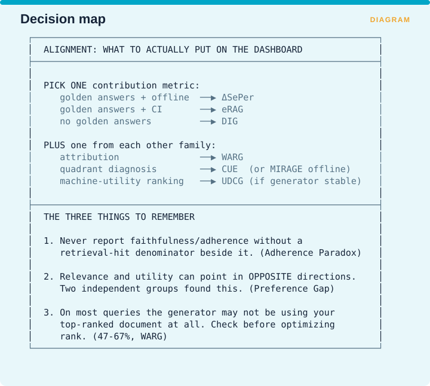

Measuring Retrieval › A.5 Alignment - the summary card

For the dashboard, pick one contribution metric according to what you have available. With golden answers and an offline setting, use ΔSePer. With golden answers and a continuous integration pipeline that has to run fast, use eRAG. With no golden answers at all, use DIG.
Then add one metric from each of the other three families: WARG for attribution, CUE for quadrant diagnosis or MIRAGE if you are working offline, and UDCG for machine-utility ranking provided your generator is stable enough for the comparison to mean anything.
Three things carry out of this part.
First, never report faithfulness or context adherence without a retrieval-hit denominator printed beside it, because that pairing is what exposes the Adherence Paradox from §1.3.
Second, relevance and utility can point in opposite directions, meaning a passage that looks more relevant can make the answer worse. Two independent groups found this, and §A.3 covers it as the Preference Gap.
Third, on most queries your generator may not be using your top-ranked document at all. WARG measured that at between 47% and 67%, so check whether it is happening in your system before spending another quarter optimizing rank.
Measuring Retrieval · Madhava Gaikwad · First edition, September 2026